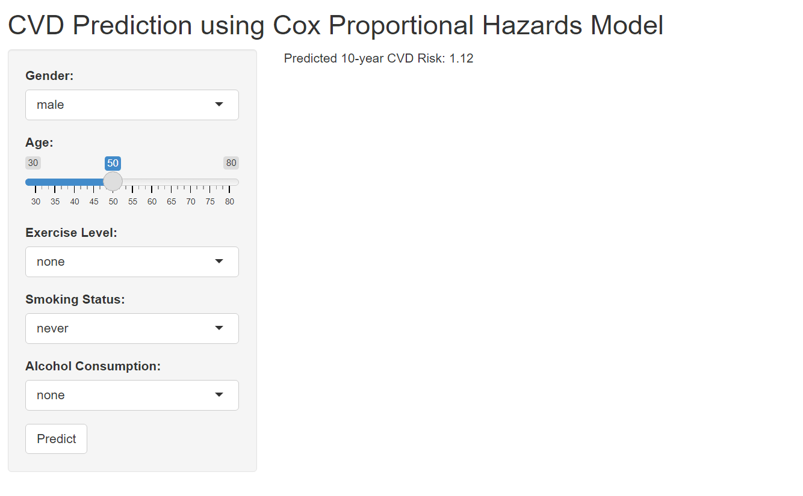
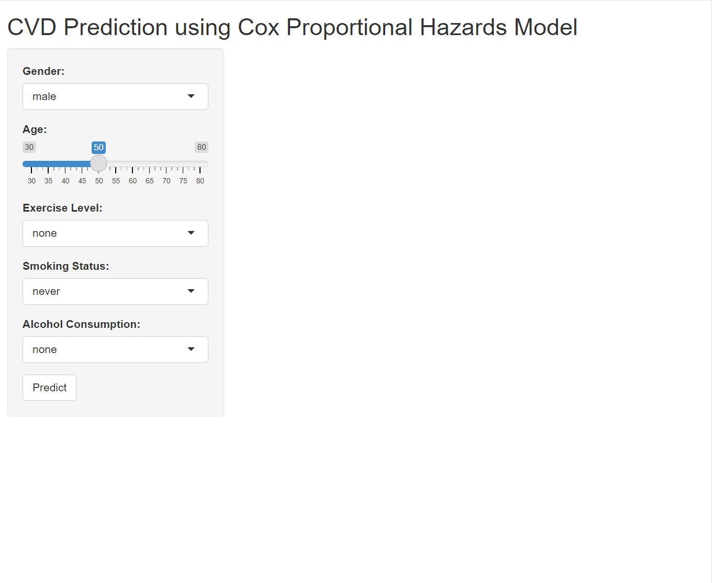
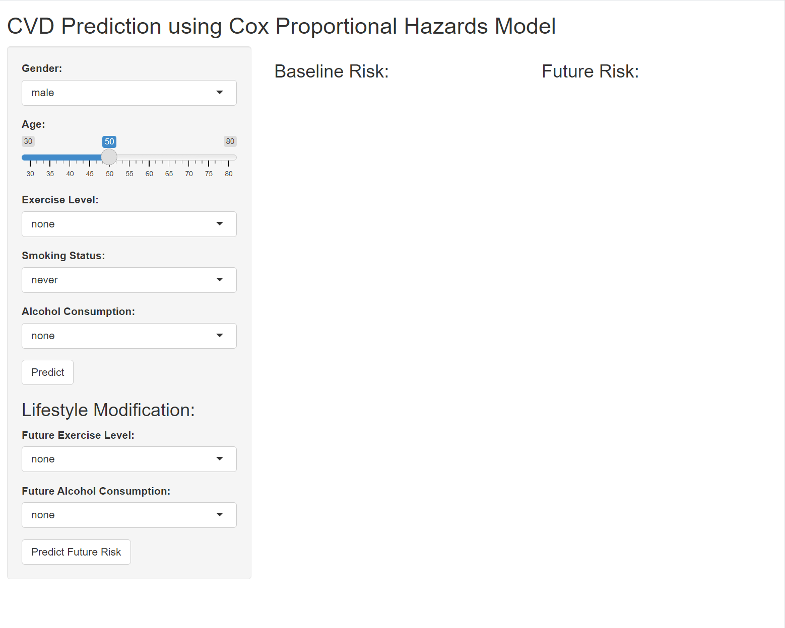

if(!require("tidyverse")) install.packages("tidyverse")
if(!require("survival")) install.packages("survival")
if(!require("survminer")) install.packages("survminer")
if(!require("shiny")) install.packages("shiny")
library(tidyverse)
library(survival)
library(survminer)
library(shiny)12 Prediction Model in shiny
12.1 Overview of Predictive Modeling
Predictive modeling is a statistical technique used to predict future outcomes based on historical data. It involves building models that capture relationships between explanatory variables and the target variable. Common techniques include regression, classification, clustering, and survival analysis.
1 Introduction Key Packages
Key packages for this tutorial include:
- tidyverse: A collection of packages for data manipulation and visualization (e.g., ggplot2, dplyr, tidyr, readr, purrr).
- survival: For survival analysis, including Cox proportional hazards models.
- survminer: For visualizing survival analysis results.
- shiny: For creating interactive web applications.
- Simulating Data for CVD Prediction
Simulating Demographic and Behavioral Data
We’ll create a simulated dataset with demographic (age, gender) and behavioral (exercise, smoking, alcohol consumption) factors:
set.seed(123)
n <- 1000
data <- tibble(
id = 1:n,
age = sample(30:80, n, replace = TRUE),
gender = sample(c("male", "female"), n, replace = TRUE),
exercise = sample(c("none", "light", "moderate", "heavy"), n, replace = TRUE),
smoking = sample(c("never", "former", "current"), n, replace = TRUE),
alcohol = sample(c("none", "light", "moderate", "heavy"), n, replace = TRUE)
)Creating Survival Data
Simulate survival data (follow-up time and event occurrence):
data <- data %>%
mutate(
time = rexp(n, 0.05), # Follow-up time
status = sample(0:1, n, replace = TRUE, prob = c(0.7, 0.3)) # CVD occurrence
)Processing and Cleaning Simulated Data
Convert categorical variables to factors:
data <- data %>%
mutate(
gender = as.factor(gender),
exercise = as.factor(exercise),
smoking = as.factor(smoking),
alcohol = as.factor(alcohol)
)Building the Cox Proportional Hazards Model
Fitting the Cox Model with Simulated Data Fit a Cox proportional hazards model using the simulated data:
library(survival)
cox_model <- coxph(Surv(time, status) ~ age + gender + exercise + smoking + alcohol, data = data)
summary(cox_model)Call:
coxph(formula = Surv(time, status) ~ age + gender + exercise +
smoking + alcohol, data = data)
n= 1000, number of events= 293
coef exp(coef) se(coef) z Pr(>|z|)
age 0.006087 1.006106 0.004139 1.471 0.141
gendermale -0.120248 0.886700 0.117578 -1.023 0.306
exerciselight 0.073738 1.076525 0.168718 0.437 0.662
exercisemoderate -0.164903 0.847976 0.169206 -0.975 0.330
exercisenone 0.154417 1.166977 0.164182 0.941 0.347
smokingformer 0.131496 1.140533 0.144001 0.913 0.361
smokingnever 0.145439 1.156548 0.149134 0.975 0.329
alcohollight 0.057187 1.058853 0.165244 0.346 0.729
alcoholmoderate 0.198341 1.219378 0.165085 1.201 0.230
alcoholnone -0.040702 0.960115 0.174962 -0.233 0.816
exp(coef) exp(-coef) lower .95 upper .95
age 1.0061 0.9939 0.9980 1.014
gendermale 0.8867 1.1278 0.7042 1.117
exerciselight 1.0765 0.9289 0.7734 1.498
exercisemoderate 0.8480 1.1793 0.6086 1.181
exercisenone 1.1670 0.8569 0.8459 1.610
smokingformer 1.1405 0.8768 0.8601 1.512
smokingnever 1.1565 0.8646 0.8634 1.549
alcohollight 1.0589 0.9444 0.7659 1.464
alcoholmoderate 1.2194 0.8201 0.8823 1.685
alcoholnone 0.9601 1.0415 0.6814 1.353
Concordance= 0.549 (se = 0.019 )
Likelihood ratio test= 9.63 on 10 df, p=0.5
Wald test = 9.56 on 10 df, p=0.5
Score (logrank) test = 9.59 on 10 df, p=0.5Interpreting Model Outputs
- The model summary provides coefficients, hazard ratios, and statistical significance for each predictor. Interpret these to understand the effect of each variable on CVD risk.
Validating the Model
- Split the data into training and test sets, fit the model on the training set, and validate it on the test set. Use metrics like concordance index to evaluate model performance.
12.2 Predicting Risk Scores with the Cox Model
Using the predict Function
The predict function in R is used to generate predictions from a model object. When working with a Cox proportional hazards model (created using coxph), the predict function can be used to compute various types of predictions. In this case, we’re interested in calculating the risk score for new data using the type = “risk” parameter.
Simulate New Data
Next, we’ll simulate some new data for which we want to predict the risk scores.
new_data <- tibble(
age = c(50, 60),
gender = factor(c("male", "female"), levels = c("male", "female")),
exercise = factor(c("moderate", "light"), levels = c("none", "light", "moderate", "heavy")),
smoking = factor(c("current", "never"), levels = c("never", "former", "current")),
alcohol = factor(c("moderate", "none"), levels = c("none", "light", "moderate", "heavy"))
)Predict Risk Scores
Now, we’ll use the predict function to calculate the risk scores for the new data.
risk_scores <- predict(cox_model, newdata = new_data, type = "risk")
print(risk_scores) 1 2
0.8906075 1.2340542 The predict function calculates the risk score for each observation in new_data, indicating relative risk compared to the baseline. Higher scores mean higher risk.
- cox_model: This is the Cox proportional hazards model object created using the coxph function.
- newdata: This is a data frame or tibble containing new observations for which we want to make predictions. The variables in newdata should match those used in the model.
- type = “risk”: This specifies that we want to calculate the risk score for the new data.
The risk_scores object contains the predicted risk scores for each observation in new_data. These scores indicate the relative risk of experiencing the event (in this case, CVD) compared to the baseline. Higher scores suggest a higher risk.
12.3 Interactive Prediction Application
Designing the User Interface
The User Interface (UI) is the part of the Shiny application that the user interacts with. It includes input controls (such as sliders, dropdown menus, and buttons) and output displays (such as text, tables, and plots).
# ui.R
ui <- fluidPage(
titlePanel("CVD Prediction using Cox Proportional Hazards Model"), # Application title
sidebarLayout(
sidebarPanel( # Inputs placed in a sidebar
selectInput("gender", "Gender:", choices = c("male", "female")), # Dropdown menu for gender
sliderInput("age", "Age:", min = 30, max = 80, value = 50), # Slider for age selection
selectInput("exercise", "Exercise Level:", choices = c("none", "light", "moderate", "heavy")), # Dropdown menu for exercise level
selectInput("smoking", "Smoking Status:", choices = c("never", "former", "current")), # Dropdown menu for smoking status
selectInput("alcohol", "Alcohol Consumption:", choices = c("none", "light", "moderate", "heavy")), # Dropdown menu for alcohol consumption
actionButton("predict", "Predict") # Button to trigger prediction
),
mainPanel( # Outputs displayed in the main panel
textOutput("prediction") # Text output to display the prediction result
)
)
)Explanation of UI Components
titlePanel()- Sets the title of the application.
sidebarLayout()- Defines a layout with a sidebar for inputs and a main panel for outputs.
sidebarPanel()Contains the input controls.
selectInput("gender", "Gender:", choices = c("male", "female"))- A dropdown menu for selecting gender. The input ID is
gender.
- A dropdown menu for selecting gender. The input ID is
sliderInput("age", "Age:", min = 30, max = 80, value = 50)- A slider for selecting age. The input ID is
age.
- A slider for selecting age. The input ID is
selectInput("exercise", "Exercise Level:", choices = c("none", "light", "moderate", "heavy"))- A dropdown menu for selecting exercise level. The input ID is
exercise.
- A dropdown menu for selecting exercise level. The input ID is
selectInput("smoking", "Smoking Status:", choices = c("never", "former", "current"))- A dropdown menu for selecting smoking status. The input ID is
smoking.
- A dropdown menu for selecting smoking status. The input ID is
selectInput("alcohol", "Alcohol Consumption:", choices = c("none", "light", "moderate", "heavy"))- A dropdown menu for selecting alcohol consumption level. The input ID is
alcohol.
- A dropdown menu for selecting alcohol consumption level. The input ID is
actionButton("predict", "Predict")- A button to trigger the prediction. The input ID is
predict.
- A button to trigger the prediction. The input ID is
mainPanel()Contains the output displays.
textOutput("prediction")- A text output to display the prediction result. The output ID is
prediction.
- A text output to display the prediction result. The output ID is
2. Implementing Server Logic
The Server logic is where the application processes user inputs and generates outputs. It contains the reactive expressions and event observers that define how the application responds to user inputs.
# server.R
server <- function(input, output) {
observeEvent(input$predict, { # Reacts to the "predict" button click
# Create a new data frame with the user inputs
new_data <- tibble(
age = input$age,
gender = factor(input$gender, levels = c("male", "female")),
exercise = factor(input$exercise, levels = c("none", "light", "moderate", "heavy")),
smoking = factor(input$smoking, levels = c("never", "former", "current")),
alcohol = factor(input$alcohol, levels = c("none", "light", "moderate", "heavy"))
)
# Predict the risk score using the Cox model
risk_score <- predict(cox_model, newdata = new_data, type = "risk")
# Render the prediction result as text
output$prediction <- renderText({
paste("Predicted 10-year CVD Risk:", round(risk_score, 2))
})
})
}Explanation of Server Components
server <- function(input, output)- Defines the server logic. It takes
inputandoutputas arguments.
- Defines the server logic. It takes
observeEvent(input$predict, {...})- A reactive expression that triggers when the “predict” button is clicked.
new_data <- tibble(...)- Creates a new data frame with the user inputs.
Code for global.R
Here’s the content of global.R:
# global.R
# Check and install required packages
if (!require("tidyverse")) install.packages("tidyverse")
if (!require("survival")) install.packages("survival")
if (!require("survminer")) install.packages("survminer")
if (!require("shiny")) install.packages("shiny")
# Load required packages
library(tidyverse)
library(survival)
library(survminer)
library(shiny)
# Data simulation (reuse the previous code for data simulation and model fitting)
set.seed(123)
n <- 1000
data <- tibble(
id = 1:n,
age = sample(30:80, n, replace = TRUE),
gender = sample(c("male", "female"), n, replace = TRUE),
exercise = sample(c("none", "light", "moderate", "heavy"), n, replace = TRUE),
smoking = sample(c("never", "former", "current"), n, replace = TRUE),
alcohol = sample(c("none", "light", "moderate", "heavy"), n, replace = TRUE),
time = rexp(n, 0.05), # Follow-up time
status = sample(0:1, n, replace = TRUE, prob = c(0.7, 0.3)) # CVD occurrence
)
data <- data %>%
mutate(
gender = as.factor(gender),
exercise = as.factor(exercise),
smoking = as.factor(smoking),
alcohol = as.factor(alcohol)
)
cox_model <- coxph(Surv(time, status) ~ age + gender + exercise + smoking + alcohol, data = data)Connecting User Inputs to Model Predictions
The observeEvent function ensures that the prediction is updated every time the user clicks the “predict” button. The new data frame new_data is created using the user inputs, and the risk score is calculated using the predict function. The result is then displayed in the textOutput element with the ID “prediction”.
 shiny apps
12.4 customizing visualization
Gauge and servival cruve
A gauge is a circular chart with a needle or pointer that indicates a specific value on a scale. It’s a simple yet effective way to display numeric data, making it particularly well-suited for tasks like risk assessment, where it’s used to visualize risk scores or probabilities.
output$prediction_gauge <- renderGauge({
gauge(prediction, min = 0, max = 2, symbol = '')
})renderGauge({ … }):
- This function is from the shiny package. It instructs Shiny to create a gauge chart and display it within the prediction_gauge output element.
gauge(prediction, min = 0, max = 2, symbol = ’’):
This is the core function call to create the gauge. Let’s look at the arguments:
- prediction: This is the numeric value that you want to display on the gauge. It represents the current reading or measurement.
- min = 0: This sets the minimum value for the gauge scale.
- max = 2: This sets the maximum value for the gauge scale.
- symbol = ’’: This removes any default symbol (like a percentage sign) that might appear next to the value.
in UI for gauge”
In this example, renderGauge generates the gauge chart and assigns it to output$prediction_gauge in server. Shiny then takes this chart and inserts it into the gaugeOutput(“prediction_gauge”) placeholder in your UI
gaugeOutput("prediction_gauge"),Before using this code, ensure that you’ve loaded the following R packages in your Shiny app (usually in the global.R file or at the beginning of server.R):
library(flexdashboard)survival curve
# in server
baseline_survival <- survfit(cox_model, newdata = new_data)
output$survival_plot <- renderPlot({
ggsurvplot(baseline_survival, data = data, conf.int = TRUE,
risk.table = TRUE, xlab = "Time", ylab = "Survival Probability")
})#in ui
plotOutput("survival_plot")This code generates a Kaplan-Meier survival curve based on your Cox proportional hazards model (cox_model) and the user’s inputted data (new_data). The resulting plot visualizes the estimated probability of survival over time for an individual with the specified characteristics. Before using this code, ensure that you’ve loaded the following R packages in your Shiny app (usually in the global.R file or at the beginning of server.R
# in global
library(survival) # For survival analysis functions
library(survminer) # For plotting survival curves (ggsurvplot function)Results

12.5 Quize: Life Style Modification
Let’s enhance your Shiny app to display two gauges: one for the baseline risk (current lifestyle) and another for the future risk (modified lifestyle). Here’s how you can adapt your code to achieve this:
